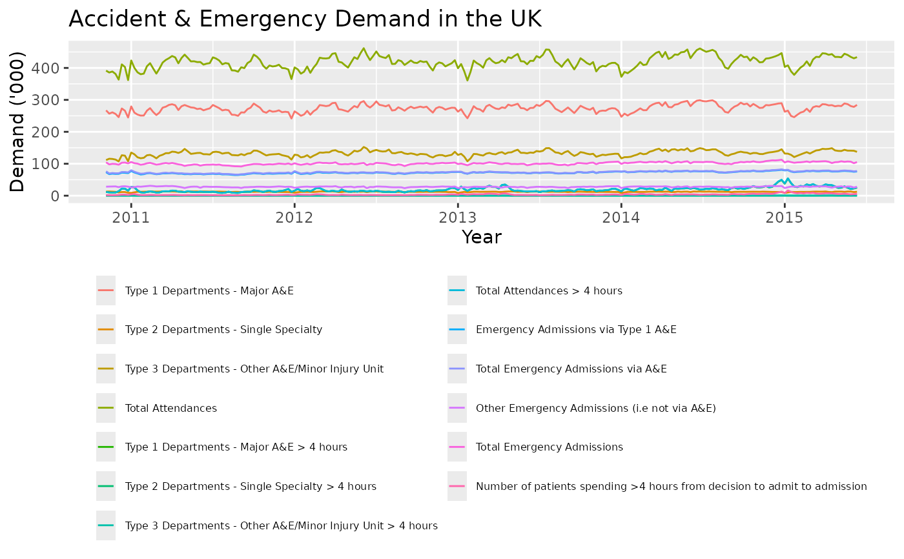

Weekly demand of Accident & Emergency departments in the UK, from 7 November 2010 to 7 June 2015.
Examples
library(ggplot2)
autoplot(AEdemand, xlab = "Year", ylab = "Demand ('000)") +
ggtitle("Accident & Emergency Demand in the UK") +
theme(
legend.position = "bottom", legend.title = element_blank(),
legend.text = element_text(size = 6), legend.key.width = unit(0.4, "cm")
) +
guides(colour = guide_legend(ncol = 2))

if (FALSE) { # \dontrun{
# Demonstration of the adjustment of all temporal aggregates
# using Total Emergency Admissions
total <- AEdemand[, 12]
totalagg <- tsaggregates(total)
plot(totalagg, main = "Total Emergency Admissions")
# Base forecasts
base <- list()
for (i in 1:5) {
base[[i]] <- forecast(auto.arima(totalagg[[i]]))
}
base[[6]] <- forecast(auto.arima(totalagg[[6]]), h = 2)
# Reconciled forecasts
reconciled <- reconcilethief(base)
main <- paste(names(totalagg), " (k=",
52 / unlist(lapply(reconciled, frequency)), ")",
sep = ""
)
par(mfrow = c(2, 3))
for (i in 6:1)
{
ylim <- range(base[[i]]$mean, base[[i]]$x, reconciled[[i]]$mean)
plot(base[[i]],
main = main[i], fcol = "white",
plot.conf = FALSE, ylim = ylim, xlim = c(2010.5, 2017.5)
)
polygon(c(2015.45, 2020, 2020, 2015.45),
c(0, 0, 1e5, 1e5),
col = "grey", border = FALSE
)
lines(base[[i]]$mean, col = "red", lty = 2)
lines(reconciled[[i]]$mean, col = "blue")
}
} # }